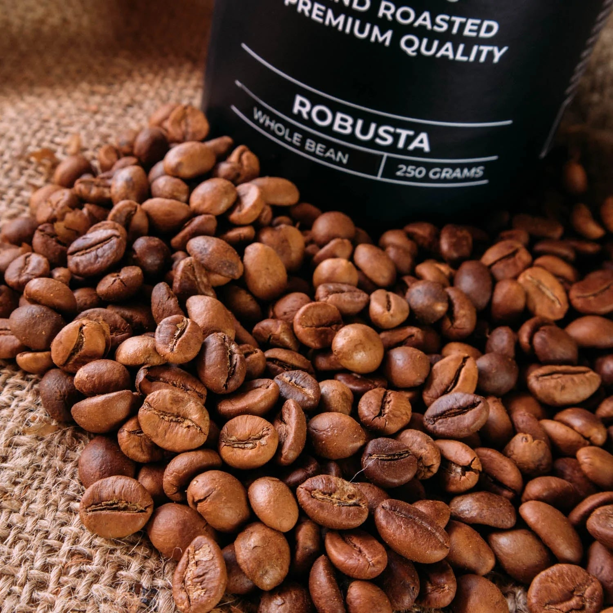

Sen. Ninoy Aquino The Coffee Frontier

Tucked high in the Daguma Range, SNA is the Coffee Capital of Sultan Kudarat. The misty, cool climate is perfect for premium Robusta and Arabica beans. It is also a site of great archaeological importance due to the Kulaman Burial Jars.
Background: Formed in 1989, this municipality is tucked high in the Daguma Range. It is the "frontier" of the province.
The Vibe: The Coffee Capital. It is cool, misty, and smells of roasting beans and damp earth—the perfect escape from the heat of the plains.